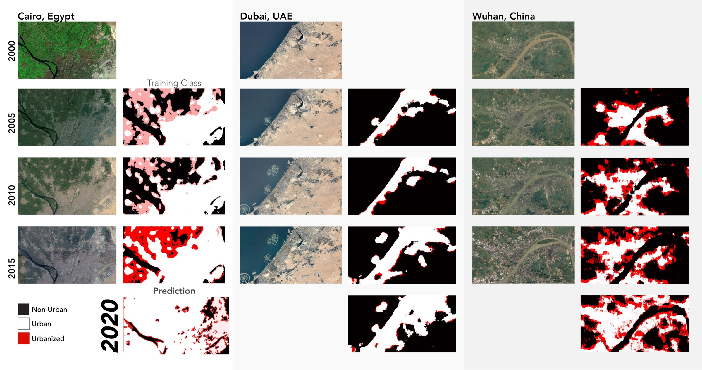
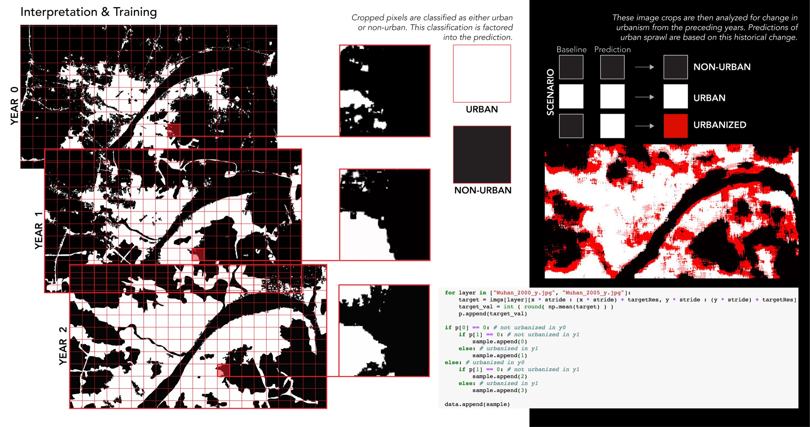
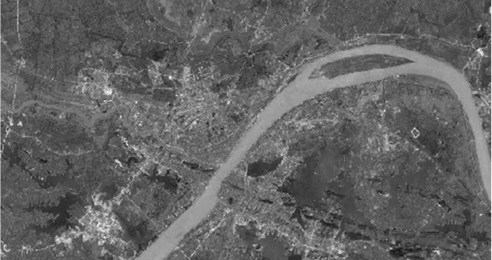
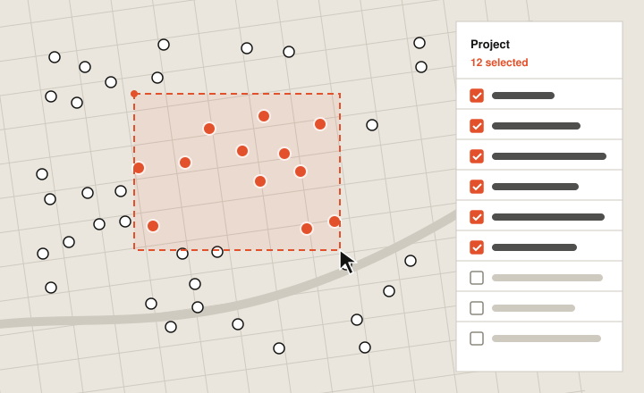

Predicting urban sprawl
Can a model learn how cities grow? A neural network trained on 15 years of satellite images of Cairo, Dubai and Wuhan, then asked what comes next.

01Context
Cairo, Dubai and Wuhan grew in very different ways. Running one model on all three tested whether urban growth follows patterns a machine can learn, regardless of the city.
02Approach
Satellite images from 2000, 2005, 2010 and 2015 were turned into figure-ground maps, cut into 32 × 32 pixel samples, and used to train a convolutional neural network to tell urban from non-urban land, then predict which pixels urbanize next.


03Outcome
Real images exist for every year, so each prediction could be checked against what actually happened. Made with Marwah Garib, Vrinda Sharma and Kun Qian for Danil Nagy’s Data Mining the City.
Marquee map selection

Say hello.
Working on something for the built environment? I’d love to hear about it.